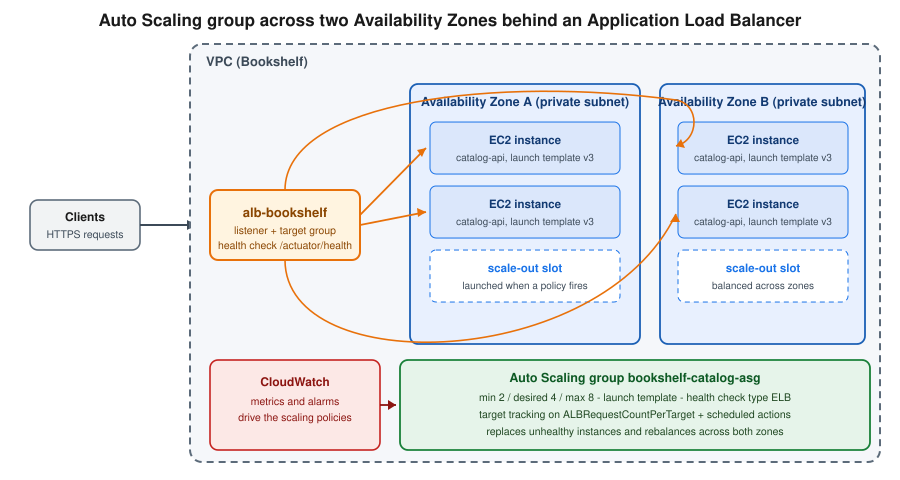

Amazon EC2 and Auto Scaling
|
This content was generated with the assistance of AI and should be verified against the official documentation before being relied on in production. |
Examples on this page target AWS CLI 2.37 (2.37.7 was current when checked on 2026-10-01) and the AWS SDK for
Java 2.x. Amazon Linux 2 reached end of support on 2026-06-30, so every example uses Amazon Linux 2023 (AL2023); re-verify
versions with aws --version and the AL2023 release notes
before relying on exact behaviour. Amazon EC2 (Elastic Compute Cloud) is the virtual-machine service that most other AWS
compute services build on, and the most flexible one: you pick the operating system, the CPU architecture and the
network placement, and you are responsible for everything above the hypervisor (see
Cloud Concepts for the shared responsibility split). Use it when you need that control, when
software cannot run in a container or function, or when you migrate an existing server estate; for new stateless
services compare it first with the options in Choosing a Compute Service. The Bookshelf
scenario is described in the section introduction; here catalog-api is packaged as a
runnable JAR and run on EC2 behind the Application Load Balancer alb-bookshelf. The region us-east-1 and the
account ID 111122223333 are placeholders.
Core concepts
| Concept | What it is |
|---|---|
Instance |
A virtual server with a type (CPU, memory, network), an AMI, a subnet (and so one Availability Zone), security groups and an optional IAM instance profile |
AMI |
Amazon Machine Image: the root volume snapshot plus launch permissions and block device mappings an instance boots from; Regional, copyable across Regions |
Instance type |
A name such as |
Root and data volumes |
Amazon EBS volumes (network-attached, persistent, AZ-bound) or the instance store (local, ephemeral); see Storage options |
Security group |
A stateful virtual firewall attached to the instance network interface; see Security groups |
Instance profile |
The container that hands an IAM role to the instance so applications get temporary credentials through the instance metadata service |
Launch template |
A versioned definition of everything needed to launch an instance, used directly or by an Auto Scaling group |
Auto Scaling group |
A managed fleet of instances built from a launch template, kept between a minimum and a maximum size and spread across Availability Zones |
Instances are priced per second (with a 60 second minimum) while they are running for most Linux instance types, and EBS volumes, public IPv4 addresses and data transfer are billed separately; the details are in Pricing model and cost drivers.
A stopped instance keeps its EBS volumes (and keeps being billed for them) but no longer incurs instance charges and
loses its instance-store data and its auto-assigned public IP address. A terminated instance cannot be restarted, and
by default its root volume is deleted with it. Enable termination protection (DisableApiTermination) on instances
whose accidental deletion would be expensive; DisableApiStop does the same for stop.
Amazon Machine Images and Amazon Linux 2023
An AMI is selected by ID, and the ID differs per Region, so scripts should not hard-code it. AWS publishes the latest
Amazon-provided AMIs as Systems Manager public parameters under /aws/service/, and a launch template can
reference such a parameter with the resolve:ssm: prefix so every launch uses the current image.
Amazon Linux 2023 is the default Linux distribution for new workloads. Compared with the older generation it uses
dnf (there is no amazon-linux-extras), has SELinux available in permissive mode, a versioned package repository
with predictable release cadence, systemd throughout, and IMDSv2 as the default for new instances. Older guides
and tutorials still show Amazon Linux 2, yum and amazon-linux-extras install; Amazon Linux 2 passed the end of its
support on 2026-06-30, so do not start new workloads on it and plan the move of existing ones (see
Comparing AL2 and AL2023). Other options are the
Windows Server, Ubuntu, Red Hat and SUSE AMIs, Bottlerocket (a container-optimised OS used by EKS and ECS), and AMIs
from AWS Marketplace; a Marketplace AMI adds its own software charge.
# Latest AL2023 AMI for x86_64 and for Arm (Graviton) in the current Region
aws ssm get-parameter \
--name /aws/service/ami-amazon-linux-latest/al2023-ami-kernel-default-x86_64 \
--query Parameter.Value --output text
aws ssm get-parameter \
--name /aws/service/ami-amazon-linux-latest/al2023-ami-kernel-default-arm64 \
--query Parameter.Value --output text
# List the AL2023 public parameters that exist
aws ssm get-parameters-by-path --path /aws/service/ami-amazon-linux-latest \
--query "Parameters[].Name" --output textAn AMI of your own is created from a running instance (aws ec2 create-image) or, better, built reproducibly by a
pipeline: see Image pipelines and deployment. Deregister AMIs and delete their snapshots when they are no longer
needed, because the snapshots keep costing storage.
Instance families and Graviton
Choose the family from the workload shape, then the size from measured utilisation:
| Family | Optimised for | Typical use in Bookshelf |
|---|---|---|
General purpose ( |
Balanced CPU, memory and network; |
|
Compute optimised ( |
High CPU per GiB |
Image processing in |
Memory optimised ( |
High memory per vCPU |
Self-managed in-memory data sets |
Storage optimised ( |
Local NVMe, high IOPS |
Self-managed databases and search nodes |
Accelerated computing ( |
GPUs and AWS ML chips |
Model inference and training (see AI, Data and Analytics Services Overview) |
AWS Graviton processors are Arm-based (arm64) chips designed by AWS. Instance types with a g in the name, such as
m7g, c7g or r8g, generally offer better price performance than comparable x86 types, and Java, Node.js, Python
and .NET workloads run on them unchanged because the JVM and the runtimes ship Arm builds. Native binaries, container
images and AMIs must be built for arm64 (multi-architecture images are covered in
Container Registry). Because new generations appear regularly and not every Region has every
type, query rather than memorise:
# Which Graviton types with 2 vCPUs and at least 4 GiB are offered in this Region?
aws ec2 describe-instance-types \
--filters "Name=processor-info.supported-architecture,Values=arm64" \
"Name=vcpu-info.default-vcpus,Values=2" \
"Name=memory-info.size-in-mib,Values=4096,8192" \
--query "InstanceTypes[].InstanceType" --output text
# Which Availability Zones offer a given type?
aws ec2 describe-instance-type-offerings --location-type availability-zone \
--filters "Name=instance-type,Values=m7g.large" \
--query "InstanceTypeOfferings[].Location" --output textReferences: aws ec2 describe-instance-types, aws ec2 describe-instance-type-offerings, Amazon EC2 instance types.
Burstable t types earn CPU credits while idle and spend them under load. In standard mode an instance that
exhausts its credits is throttled; in unlimited mode it keeps bursting and the surplus is charged. They suit
development and low-traffic services, not sustained load. Attribute-based instance type selection lets a launch
template or Auto Scaling group describe the vCPU and memory range instead of listing types, which widens the Spot pool
(see Purchasing options).
Launching an instance
The hands-on path is: create an instance role, a security group, then the instance, connect with Session Manager, and clean up. The instance role and profile come first because the instance needs them at launch.
The instance role and instance profile
An instance profile passes an IAM role to the instance. Applications on the instance (the AWS CLI, the SDKs, the Spring Cloud AWS starters) receive short-lived credentials from the instance metadata service through the default credential provider chain, so no access keys are ever copied to the machine (see Identity and Access). The console creates the profile for you when you create the role; the CLI needs both steps. The trust policy lets EC2 assume the role:
{
"Version": "2012-10-17",
"Statement": [
{
"Effect": "Allow",
"Principal": { "Service": "ec2.amazonaws.com" },
"Action": "sts:AssumeRole"
}
]
}The permissions combine the AWS managed policy AmazonSSMManagedInstanceCore (needed for Session Manager and Systems
Manager inventory and patching) with a least-privilege inline policy for the application. catalog-api here reads its
JAR from an artifact bucket and one secret:
{
"Version": "2012-10-17",
"Statement": [
{
"Sid": "ReadArtifact",
"Effect": "Allow",
"Action": "s3:GetObject",
"Resource": "arn:aws:s3:::bookshelf-artifacts-111122223333/catalog-api/*"
},
{
"Sid": "ReadDatabaseSecret",
"Effect": "Allow",
"Action": "secretsmanager:GetSecretValue",
"Resource": "arn:aws:secretsmanager:us-east-1:111122223333:secret:bookshelf/catalog/db-*"
}
]
}Reference: IAM roles for Amazon EC2.
In the AWS Management Console
-
Open IAM, choose Roles, Create role, select AWS service and the EC2 use case, and attach
AmazonSSMManagedInstanceCoreplus your inline policy. Name the rolebookshelf-catalog-ec2. -
Open EC2 and check the Region selector, then choose Launch instance.
-
Enter the name
catalog-api-test. Under Application and OS Images choose Amazon Linux and keep the Amazon Linux 2023 AMI; the architecture selector offers 64-bit (x86) and 64-bit (Arm). -
Under Instance type pick a type such as
t3.small(x86) ort4g.small(Arm) for a first test. -
Under Key pair choose Proceed without a key pair: Session Manager replaces SSH (see Connecting without SSH keys).
-
Under Network settings choose Edit, select the VPC and a private subnet, set Auto-assign public IP to disable if the subnet has a NAT gateway or VPC endpoints for Systems Manager, and create or select a security group (see Security groups).
-
Under Configure storage keep the default gp3 root volume and tick Encrypt if your account does not already enforce default encryption.
-
Under Advanced details pick the IAM instance profile
bookshelf-catalog-ec2, set Metadata version to V2 only (token required) and paste the user-data script from User data. -
Review the right-hand Summary and choose Launch instance. Use Console-to-Code (the button next to the launch button) to generate the matching CLI, CloudFormation or CDK code for what you clicked.
With the AWS CLI
export AWS_REGION=us-east-1
ACCOUNT_ID=$(aws sts get-caller-identity --query Account --output text)
# 1. Role, policy and instance profile
aws iam create-role --role-name bookshelf-catalog-ec2 \
--assume-role-policy-document file://trust-ec2.json
aws iam attach-role-policy --role-name bookshelf-catalog-ec2 \
--policy-arn arn:aws:iam::aws:policy/AmazonSSMManagedInstanceCore
aws iam put-role-policy --role-name bookshelf-catalog-ec2 \
--policy-name catalog-api --policy-document file://catalog-api-policy.json
aws iam create-instance-profile --instance-profile-name bookshelf-catalog-ec2
aws iam add-role-to-instance-profile --instance-profile-name bookshelf-catalog-ec2 \
--role-name bookshelf-catalog-ec2
# 2. Latest AL2023 AMI and a private subnet (set VPC_ID and SUBNET_A for your network)
AMI_ID=$(aws ssm get-parameter \
--name /aws/service/ami-amazon-linux-latest/al2023-ami-kernel-default-arm64 \
--query Parameter.Value --output text)
# 3. Launch: IMDSv2 required, encrypted gp3 root volume, no key pair, no public IP
INSTANCE_ID=$(aws ec2 run-instances \
--image-id "$AMI_ID" \
--instance-type t4g.small \
--subnet-id "$SUBNET_A" \
--security-group-ids "$SG_INSTANCE" \
--iam-instance-profile Name=bookshelf-catalog-ec2 \
--metadata-options "HttpTokens=required,HttpEndpoint=enabled,HttpPutResponseHopLimit=1" \
--block-device-mappings '[{"DeviceName":"/dev/xvda","Ebs":{"VolumeSize":20,"VolumeType":"gp3","Encrypted":true,"DeleteOnTermination":true}}]' \
--user-data file://user-data.sh \
--tag-specifications 'ResourceType=instance,Tags=[{Key=Name,Value=catalog-api-test},{Key=app,Value=bookshelf}]' \
--query "Instances[0].InstanceId" --output text)
aws ec2 wait instance-running --instance-ids "$INSTANCE_ID"
aws ec2 describe-instances --instance-ids "$INSTANCE_ID" \
--query "Reservations[0].Instances[0].{state:State.Name,az:Placement.AvailabilityZone,ip:PrivateIpAddress}"References: aws ec2 run-instances, aws iam create-instance-profile, aws ec2 wait instance-running, Launch an instance.
Day-to-day lifecycle commands are aws ec2 stop-instances, start-instances, reboot-instances and
terminate-instances. To resize an instance, stop it, change the type with aws ec2 modify-instance-attribute
--instance-id "$INSTANCE_ID" --instance-type "{\"Value\": \"t4g.medium\"}", and start it again; the new type must be
compatible with the AMI (an arm64 AMI needs an Arm type). Reference:
aws ec2 modify-instance-attribute.
Troubleshooting tools include the status checks (system and instance reachability), the Monitor and troubleshoot
menu with Get system log and Get instance screenshot (aws ec2 get-console-output), and the CloudWatch
metrics described in Monitoring and recovery.
User data
User data is a script or cloud-config document passed to the instance at launch; the cloud-init service on AL2023
runs a shell script that starts with #! once, on first boot, as root. It is the lightest way to configure an
instance, but it is not a deployment system: it runs only once, it is limited to 16 KB before encoding, and its content
is readable from the instance metadata service, so never put secrets in it (fetch them at run time with the instance
role instead). For the Bookshelf catalog-api:
#!/bin/bash
set -euxo pipefail
dnf install -y java-21-amazon-corretto-headless
useradd --system --home-dir /opt/catalog-api catalog
mkdir -p /opt/catalog-api
aws s3 cp s3://bookshelf-artifacts-111122223333/catalog-api/catalog-api.jar /opt/catalog-api/catalog-api.jar
chown -R catalog:catalog /opt/catalog-api
cat > /etc/systemd/system/catalog-api.service <<'UNIT'
[Unit]
Description=Bookshelf catalog-api
After=network-online.target
[Service]
User=catalog
Environment=SPRING_PROFILES_ACTIVE=aws
ExecStart=/usr/bin/java -jar /opt/catalog-api/catalog-api.jar --server.port=8080
Restart=on-failure
[Install]
WantedBy=multi-user.target
UNIT
systemctl daemon-reload
systemctl enable --now catalog-apiReference: Run commands on your Linux instance at launch; the output of the script is in /var/log/cloud-init-output.log.
Connecting without SSH keys
A key pair is an SSH key whose public half is injected into the instance at first boot. It still works, but it
needs inbound port 22 (and so a public address or a bastion host), key distribution and rotation, and it leaves no
central audit trail. Older guides start every tutorial with a downloaded .pem file; the current recommendation is:
| Method | How it works | Needs |
|---|---|---|
Session Manager (Systems Manager) |
An agent on the instance opens an outbound TLS connection to the Systems Manager service; you get a shell from the console or CLI, with every session optionally logged to CloudWatch Logs or S3 |
SSM Agent (preinstalled on AL2023), the instance profile with |
EC2 Instance Connect |
A short-lived (about 60 seconds) SSH public key is pushed through the API and checked against IAM permissions |
Inbound port 22 from the connection source or an EC2 Instance Connect Endpoint (a private tunnel into the VPC), plus the |
SSH with a key pair |
Classic SSH |
Inbound port 22, key management |
# Session Manager shell (needs the Session Manager plugin installed locally; CloudShell has it)
aws ssm start-session --target "$INSTANCE_ID"
# Forward a remote port: reach catalog-api on localhost:8080 without opening any security group rule
aws ssm start-session --target "$INSTANCE_ID" \
--document-name AWS-StartPortForwardingSession \
--parameters "portNumber=8080,localPortNumber=8080"
# EC2 Instance Connect through an Instance Connect Endpoint (no public IP required)
aws ec2-instance-connect ssh --instance-id "$INSTANCE_ID" --connection-type eiceReferences: aws ssm start-session, AWS Systems Manager Session Manager, Session Manager plugin, aws ec2-instance-connect ssh, Connect using EC2 Instance Connect Endpoint.
In the console, select the instance, choose Connect, and use the Session Manager or EC2 Instance Connect tab. The instance appears under Systems Manager Fleet Manager only when the agent, the profile and the network path are all in place; that is the first thing to check when the Session Manager tab is greyed out.
Instance metadata and IMDSv2
The instance metadata service (IMDS) answers on the link-local address 169.254.169.254 and serves the instance ID,
the user data and, importantly, the temporary credentials of the instance role. IMDSv1 answers a plain GET request,
which is exploitable if the application has a server-side request forgery (SSRF) bug: an attacker who can make the
server fetch a URL can read the role credentials. IMDSv2 requires a session token obtained with a PUT request,
which SSRF-style attacks typically cannot perform. IMDSv2 is the default for instances launched from AL2023, and the
launch examples above set HttpTokens=required explicitly. Older guides still show the unauthenticated curl form.
# On the instance: IMDSv2 token, then metadata
TOKEN=$(curl -sX PUT "http://169.254.169.254/latest/api/token" \
-H "X-aws-ec2-metadata-token-ttl-seconds: 300")
curl -s -H "X-aws-ec2-metadata-token: $TOKEN" \
http://169.254.169.254/latest/meta-data/instance-id
# Require IMDSv2 on a running instance
aws ec2 modify-instance-metadata-options --instance-id "$INSTANCE_ID" \
--http-tokens required --http-endpoint enabled --http-put-response-hop-limit 1
# Make IMDSv2 the default for every new launch in this Region of the account
aws ec2 modify-instance-metadata-defaults --http-tokens requiredReferences: Configure the instance metadata service, aws ec2 modify-instance-metadata-options, aws ec2 modify-instance-metadata-defaults.
Containers on the instance need a hop limit of 2 to reach the IMDS through the extra network hop; keep it at 1 when only the host needs it. Application code never calls the IMDS directly: the AWS SDK for Java 2.x does it for you, as shown in Using the instance role from Java.
Security groups
A security group is a stateful allow-list firewall evaluated at the instance network interface: there are no deny rules, return traffic of an allowed flow is allowed automatically, and rules can reference another security group instead of an address range. That last feature is the standard way to express tiers: the load balancer’s group is allowed to reach the application group, and nothing else is. A network ACL is the separate, stateless, subnet-level layer (see VPC Networking).
For the Bookshelf web tier, only the ALB is reachable from the internet, and the instances accept port 8080 only from the ALB’s group:
SG_ALB=$(aws ec2 create-security-group --group-name alb-bookshelf \
--description "Bookshelf ALB" --vpc-id "$VPC_ID" --query GroupId --output text)
SG_INSTANCE=$(aws ec2 create-security-group --group-name catalog-api-instances \
--description "Bookshelf catalog-api instances" --vpc-id "$VPC_ID" --query GroupId --output text)
# Internet to ALB on 443
aws ec2 authorize-security-group-ingress --group-id "$SG_ALB" \
--protocol tcp --port 443 --cidr 0.0.0.0/0
# ALB to instances on 8080, referencing the ALB group instead of a CIDR
aws ec2 authorize-security-group-ingress --group-id "$SG_INSTANCE" \
--protocol tcp --port 8080 --source-group "$SG_ALB"References: aws ec2 create-security-group, aws ec2 authorize-security-group-ingress, Control traffic to your AWS resources using security groups.
In the console: EC2, Security Groups, Create security group, choose the VPC, add the inbound rules (set the
Source to a security group ID rather than a CIDR for tier-to-tier rules) and leave the default outbound rule or
tighten it. A new security group denies all inbound traffic and allows all outbound traffic. Open port 22 to
0.0.0.0/0 never; if you must use SSH, restrict the source to a known address or use an Instance Connect Endpoint.
Network interfaces and Elastic IP addresses
Each instance has a primary elastic network interface (ENI) in its subnet. You can attach additional ENIs in the same Availability Zone, for example to give an appliance a second address; the ENI, with its private IP and security groups, can be detached and moved to a replacement instance. An Elastic IP address is a static public IPv4 address you allocate and associate with an instance or ENI, so it survives stop and start.
Since 2024-02-01 AWS charges for every public IPv4 address, whether it is an Elastic IP associated with a running instance, an unassociated Elastic IP or an auto-assigned address, so the old advice to give each server a public address is also a cost decision. Put instances in private subnets behind a load balancer, reach them with Session Manager, and use IPv6 where clients support it; the charge applies to the load balancer’s own public addresses too (see VPC Networking and the Amazon VPC pricing page).
ALLOC_ID=$(aws ec2 allocate-address --domain vpc --query AllocationId --output text)
aws ec2 associate-address --instance-id "$INSTANCE_ID" --allocation-id "$ALLOC_ID"
# Later, when no longer needed (an unassociated address is still billed):
aws ec2 disassociate-address --association-id "$ASSOC_ID"
aws ec2 release-address --allocation-id "$ALLOC_ID"Storage options
Instances use two kinds of block storage:
| Aspect | Amazon EBS | Instance store |
|---|---|---|
Persistence |
Survives stop, start and instance failure; independent lifecycle |
Lost on stop, terminate or host failure |
Location |
Network-attached, tied to one Availability Zone |
Disks physically in the host (only on types with a |
Typical use |
Root volume, databases, anything that must persist |
Caches, scratch space, replicated or rebuildable data |
Snapshots |
Incremental, stored in S3, copyable across Regions and accounts |
Not supported |
The default volume type is gp3 (independent IOPS and throughput settings); older guides and AMIs still use gp2, whose performance is tied to volume size. EBS volumes, snapshots, encryption, EFS and the other options are covered in Block and File Storage on AWS; Spring Boot applications that store files rather than blocks should consider the object-store approach in File Storage & Object Stores. Because an EBS volume is bound to one Availability Zone, a replacement instance in another zone cannot reattach it: keep state in managed services (RDS, S3, EFS) so instances stay disposable.
Purchasing options
| Option | How it works | Best for |
|---|---|---|
On-Demand |
Pay per second with no commitment |
Unpredictable or short-lived workloads, first deployments |
Savings Plans |
Commit to a spend per hour for one or three years; Compute Savings Plans apply across instance families, Regions, Fargate and Lambda, EC2 Instance Savings Plans are tied to a family in a Region for a deeper discount |
Steady baseline usage |
Reserved Instances |
Commit to an instance configuration for one or three years; still available, with Savings Plans generally more flexible |
Steady usage on specific types, capacity reservation with zonal RIs |
Spot Instances |
Spare capacity at a large discount; AWS can reclaim an instance with a two-minute interruption notice |
Fault-tolerant, stateless, flexible work: batch, CI workers, extra web capacity |
Dedicated Hosts and Instances |
Physical servers dedicated to you |
Licence-bound software, compliance requirements |
On-Demand Capacity Reservations and Capacity Blocks |
Reserve capacity in an Availability Zone, with or without a billing commitment |
Guaranteed capacity for events or GPU training |
Spot capacity pools are per instance type and Availability Zone, so diversify: allow many types and sizes (attribute-based
selection helps), use the price-capacity-optimized allocation strategy, and enable Capacity Rebalancing in an Auto
Scaling group so AWS launches a replacement when it signals a pool is at elevated risk. A common production mix is
an On-Demand baseline covered by a Savings Plan plus Spot for the spikes, set in the group’s mixed instances policy
(see Auto Scaling groups). Pricing for each option is on the Amazon EC2 pricing
pages; see Cost Management and Support for Cost Explorer, Savings Plans recommendations and Budgets.
Monitoring and recovery
EC2 publishes metrics to CloudWatch every five minutes by default, or every minute with detailed monitoring (billed).
The metrics (CPUUtilization, NetworkIn, StatusCheckFailed, EBS and credit metrics) are collected outside the
instance, so memory and disk usage need the CloudWatch agent (see Monitoring and Observability).
Older guides build a CloudWatch alarm with the arn:aws:automate:us-east-1:ec2:recover action to restart a failed
instance on new hardware. EC2 now performs simplified automatic recovery by default for instances that support
it: when the underlying host reports a system impairment, EC2 recovers the instance on healthy hardware, keeping its
instance ID, private and Elastic IP addresses, volumes and metadata. This does not protect against the loss of an
Availability Zone or against an application crash. For those, run at least two instances in different zones in an Auto
Scaling group, as described next. The recovery behaviour can be changed per instance:
aws ec2 modify-instance-maintenance-options --instance-id "$INSTANCE_ID" \
--auto-recovery defaultLaunch templates
A launch template stores the AMI, instance type (or attribute-based requirements), key pair, security groups, IAM
instance profile, block devices, user data, tags and metadata options, with numbered versions and a default version.
Auto Scaling groups reference a template and a version (a number, $Default or $Latest), so a new version plus an
instance refresh is how the fleet is updated. Launch configurations are the legacy predecessor: they are immutable,
no longer receive new EC2 features and cannot be created in new accounts through the console, so use templates.
# lt.json: the launch template data
cat > lt.json <<EOF
{
"ImageId": "resolve:ssm:/aws/service/ami-amazon-linux-latest/al2023-ami-kernel-default-arm64",
"InstanceType": "t4g.small",
"IamInstanceProfile": { "Name": "bookshelf-catalog-ec2" },
"SecurityGroupIds": ["$SG_INSTANCE"],
"MetadataOptions": { "HttpTokens": "required", "HttpEndpoint": "enabled", "HttpPutResponseHopLimit": 1 },
"BlockDeviceMappings": [
{ "DeviceName": "/dev/xvda",
"Ebs": { "VolumeSize": 20, "VolumeType": "gp3", "Encrypted": true, "DeleteOnTermination": true } }
],
"UserData": "$(base64 < user-data.sh | tr -d '\n')",
"TagSpecifications": [
{ "ResourceType": "instance", "Tags": [ { "Key": "app", "Value": "bookshelf" } ] }
]
}
EOF
aws ec2 create-launch-template --launch-template-name bookshelf-catalog \
--version-description "AL2023 Java 21 Graviton" \
--launch-template-data file://lt.json
# A new version based on version 1, and make it the default
aws ec2 create-launch-template-version --launch-template-name bookshelf-catalog \
--source-version 1 --version-description "bigger instance" \
--launch-template-data '{"InstanceType":"t4g.medium"}'
aws ec2 modify-launch-template --launch-template-name bookshelf-catalog --default-version 2References: aws ec2 create-launch-template, aws ec2 create-launch-template-version, aws ec2 modify-launch-template, Store instance launch parameters in Amazon EC2 launch templates.
In the console: EC2, Launch Templates, Create launch template, tick Provide guidance to help me set up a template that I can use with EC2 Auto Scaling, fill in the same fields as the launch wizard (AMI, type, security group, Advanced details profile, metadata version and user data) and choose Create launch template. To change it, open the template, choose Actions then Modify template (Create new version), and set the new version as the default under Actions.
Auto Scaling groups
An Amazon EC2 Auto Scaling group keeps the number of instances between a minimum and a maximum size, aims at the desired capacity, replaces instances that fail health checks, and spreads instances evenly over the Availability Zones of the subnets you give it. There is no charge for Auto Scaling itself; you pay for the instances, volumes and alarms it uses.

The load balancer and target group
The ALB is detailed in Load Balancers and Gateways; the group needs only a target group, which
holds the registered instances and the health check. When you attach the target group to the group, Auto Scaling
registers new instances, deregisters instances before terminating them (honouring the deregistration delay) and, with
the ELB health check type, treats a failed load balancer health check as unhealthy and replaces the instance.
TG_ARN=$(aws elbv2 create-target-group --name catalog-api-tg \
--protocol HTTP --port 8080 --vpc-id "$VPC_ID" --target-type instance \
--health-check-path /actuator/health --health-check-interval-seconds 15 \
--healthy-threshold-count 2 --unhealthy-threshold-count 3 \
--query "TargetGroups[0].TargetGroupArn" --output text)
ALB_ARN=$(aws elbv2 create-load-balancer --name alb-bookshelf --type application \
--subnets "$PUBLIC_SUBNET_A" "$PUBLIC_SUBNET_B" --security-groups "$SG_ALB" \
--query "LoadBalancers[0].LoadBalancerArn" --output text)
aws elbv2 create-listener --load-balancer-arn "$ALB_ARN" --protocol HTTPS --port 443 \
--certificates CertificateArn="$CERT_ARN" \
--default-actions Type=forward,TargetGroupArn="$TG_ARN"References: aws elbv2 create-target-group, aws elbv2 create-load-balancer, aws elbv2 create-listener, What is an Application Load Balancer. The certificate comes from ACM (see Route 53, DNS and ACM Certificates).
In the AWS Management Console
-
In EC2, choose Auto Scaling Groups, then Create Auto Scaling group.
-
Enter the name
bookshelf-catalog-asg, select the launch templatebookshelf-catalogand the version, and choose Next. -
Under Instance type requirements keep the launch template’s type, or choose Override launch template to add several types, set the On-Demand/Spot mix and the allocation strategy.
-
Under Network pick the VPC and the private subnets in at least two Availability Zones, set Availability Zone distribution to Balanced best effort, and choose Next.
-
Under Load balancing choose Attach to an existing load balancer, select Choose from your load balancer target groups and pick
catalog-api-tg. Under Health checks turn on Elastic Load Balancing health checks and set the health check grace period to the time the application needs to start (for example 120 seconds). -
On Group size and scaling set desired 4, minimum 2 and maximum 8, and choose Target tracking scaling policy with the metric Application Load Balancer request count per target and a target value (for example 500). Optionally set an instance maintenance policy and scale-in protection.
-
Add notifications and tags, review, and choose Create Auto Scaling group. Open the Activity tab to watch instances launch.
With the AWS CLI
aws autoscaling create-auto-scaling-group \
--auto-scaling-group-name bookshelf-catalog-asg \
--launch-template "LaunchTemplateName=bookshelf-catalog,Version=\$Default" \
--min-size 2 --max-size 8 --desired-capacity 4 \
--vpc-zone-identifier "$SUBNET_A,$SUBNET_B" \
--target-group-arns "$TG_ARN" \
--health-check-type ELB --health-check-grace-period 120 \
--default-instance-warmup 120 \
--capacity-rebalance \
--tags "Key=app,Value=bookshelf,PropagateAtLaunch=true"
aws autoscaling describe-auto-scaling-groups --auto-scaling-group-names bookshelf-catalog-asg \
--query "AutoScalingGroups[0].{desired:DesiredCapacity,instances:Instances[].[InstanceId,AvailabilityZone,LifecycleState,HealthStatus]}"References: aws autoscaling create-auto-scaling-group, aws autoscaling describe-auto-scaling-groups, Create an Auto Scaling group using a launch template.
Important settings:
-
Health check grace period is the time after launch during which health check results are ignored. Too short and a slow-starting Spring Boot application is killed and replaced in a loop; too long and a broken instance lingers.
-
Default instance warmup is the time a new instance needs before its metrics count towards scaling decisions, which stops the group from over-scaling while instances boot.
-
Mixed instances policy (
--mixed-instances-policy) combines several instance types, an On-Demand base, an On-Demand percentage above the base and Spot allocation strategies. -
Termination policies (default, oldest launch template, closest to next instance hour, and others) decide which instance goes first on scale-in; scale-in protection protects specific instances.
-
Lifecycle hooks pause an instance in
Pending:WaitorTerminating:Waitso you can run a script, drain connections or upload logs before it enters or leaves service. -
Warm pools keep pre-initialised stopped or hibernated instances ready, shortening scale-out for slow-booting applications at the price of storing the volumes.
-
Instance maintenance policy controls how much capacity may be below the desired value when instances are replaced for health or rebalancing.
Scaling policies
| Type | Behaviour |
|---|---|
Target tracking |
You choose a metric and a target value (for example average CPU 50 percent or 500 requests per target); Auto Scaling creates and manages the CloudWatch alarms and adds or removes capacity to stay near the target. Start here |
Step scaling |
A set of steps, each mapping an alarm breach size to an adjustment (add one instance when CPU is above 60 percent, add three when above 80 percent); you own the alarms |
Simple scaling |
One adjustment per alarm with a cooldown; legacy, prefer step or target tracking |
Scheduled scaling |
Change the minimum, maximum or desired capacity at a time or on a recurrence, for known patterns such as a morning peak |
Predictive scaling |
Forecasts load from up to 14 days of history and scales ahead of recurring peaks; can be run in forecast-only mode first |
# Target tracking on requests per target, behind the ALB
cat > tt.json <<EOF
{
"PredefinedMetricSpecification": {
"PredefinedMetricType": "ALBRequestCountPerTarget",
"ResourceLabel": "$ALB_LABEL/$TG_LABEL"
},
"TargetValue": 500.0
}
EOF
aws autoscaling put-scaling-policy --auto-scaling-group-name bookshelf-catalog-asg \
--policy-name requests-per-target --policy-type TargetTrackingScaling \
--target-tracking-configuration file://tt.json
# Scheduled: higher floor on weekday mornings, lower at night
aws autoscaling put-scheduled-update-group-action \
--auto-scaling-group-name bookshelf-catalog-asg \
--scheduled-action-name weekday-morning --recurrence "0 7 * * 1-5" \
--min-size 4 --desired-capacity 6
aws autoscaling put-scheduled-update-group-action \
--auto-scaling-group-name bookshelf-catalog-asg \
--scheduled-action-name night --recurrence "0 22 * * *" \
--min-size 2 --desired-capacity 2References: aws autoscaling put-scaling-policy, aws autoscaling put-scheduled-update-group-action, Target tracking scaling policies, Scheduled scaling, Predictive scaling. The ResourceLabel has the form app/<load-balancer-name>/<id>/targetgroup/<target-group-name>/<id>, taken from the tail of the load balancer and target group ARNs.
The ALB_LABEL and TG_LABEL variables above are those two ARN tails. In the console the same policy is created from
the group’s Automatic scaling tab by choosing Create dynamic scaling policy. Scale by a metric that tracks
load per instance (CPU, requests per target, or a custom metric such as queue depth per instance for workers reading
SQS); scale-out reacts quickly and scale-in is deliberately slower. The same Application Auto Scaling ideas apply to
containers (ECS Deployments, Scaling and Networking) and to Kubernetes (EKS Clusters).
Instance refresh: rolling out a new version
To deploy a new AMI or launch template version, start an instance refresh: Auto Scaling replaces instances in batches while keeping a minimum percentage of the capacity healthy, and can roll back automatically if an alarm fires. Setting a checkpoint pauses the refresh after a canary percentage so you can verify the new version first.
aws autoscaling start-instance-refresh --auto-scaling-group-name bookshelf-catalog-asg \
--preferences '{"MinHealthyPercentage":75,"InstanceWarmup":120,"CheckpointPercentages":[25,100],"CheckpointDelay":300,"AutoRollback":true}'
aws autoscaling describe-instance-refreshes --auto-scaling-group-name bookshelf-catalog-asg \
--query "InstanceRefreshes[0].{status:Status,percent:PercentageComplete}"References: aws autoscaling start-instance-refresh, Use an instance refresh to update instances in an Auto Scaling group.
In the console, open the group, choose the Instance refresh tab, then Start instance refresh. For every request
that must survive a replacement, rely on the load balancer’s connection draining and make catalog-api handle SIGTERM
gracefully (Spring Boot’s server.shutdown=graceful).
Image pipelines and deployment
Baking dependencies into an AMI gives faster, more predictable launches than installing everything with user data and makes a scaled-out instance identical to the tested one. HashiCorp Packer is the widely used open-source tool for this: it launches a temporary instance, runs provisioners and snapshots an AMI. EC2 Image Builder is the AWS-native alternative: a pipeline of build and test components with scheduled rebuilds when the parent image receives updates, distribution to several Regions and accounts, and no charge for the service itself (you pay for the build instances and storage). Both can run inside a CI workflow (see Developer Tools and DevOps).
AWS CodeDeploy is the deployment service for instance fleets: an appspec.yml describes lifecycle hooks (stop the
service, install, start, validate) and a deployment configuration rolls the revision across an Auto Scaling group,
in place or blue/green. It suits long-lived instances that are updated rather than replaced; for immutable fleets, a
new AMI plus an instance refresh is simpler. If the application is a container image, move to
ECS and Fargate instead of managing instances.
aws imagebuilder list-image-pipelines --query "imagePipelineList[].[name,status]" --output table
aws deploy list-applicationsUsing the instance role from Java
Application code does not manage credentials. With the AWS SDK for Java 2.x, the default credential provider chain
finds the instance profile credentials through IMDSv2 and refreshes them before they expire. catalog-api reading
the artifact bucket, or listing the fleet, needs no key:
package com.example.bookshelf.ec2;
import software.amazon.awssdk.regions.Region;
import software.amazon.awssdk.services.ec2.Ec2Client;
import software.amazon.awssdk.services.ec2.model.DescribeInstancesRequest;
import software.amazon.awssdk.services.ec2.model.Filter;
public class FleetInspector {
public static void main(String[] args) {
try (Ec2Client ec2 = Ec2Client.builder().region(Region.US_EAST_1).build()) {
var request = DescribeInstancesRequest.builder()
.filters(Filter.builder().name("tag:app").values("bookshelf").build())
.build();
ec2.describeInstancesPaginator(request).reservations().forEach(reservation ->
reservation.instances().forEach(i ->
System.out.printf("%s %s %s%n", i.instanceId(),
i.instanceType(), i.placement().availabilityZone())));
}
}
}References: Default credentials provider chain, Work with Amazon EC2 instances (SDK for Java 2.x). The Java SDK v1 reached end of support on 2025-12-31, so new code uses the software.amazon.awssdk packages shown here. The role needs ec2:DescribeInstances for this program, which would be added to the inline policy.
Infrastructure as code
The same fleet can be declared as CloudFormation (see Infrastructure as Code for stacks and
change sets): an AWS::EC2::LaunchTemplate with the SSM parameter type AWS::SSM::Parameter::Value<AWS::EC2::Image::Id> for the AMI,
an AWS::AutoScaling::AutoScalingGroup and an AWS::AutoScaling::ScalingPolicy. A condensed template:
Parameters:
LatestAmi:
Type: AWS::SSM::Parameter::Value<AWS::EC2::Image::Id>
Default: /aws/service/ami-amazon-linux-latest/al2023-ami-kernel-default-arm64
SubnetIds:
Type: List<AWS::EC2::Subnet::Id>
InstanceSecurityGroup:
Type: AWS::EC2::SecurityGroup::Id
TargetGroupArn:
Type: String
Resources:
CatalogTemplate:
Type: AWS::EC2::LaunchTemplate
Properties:
LaunchTemplateData:
ImageId: !Ref LatestAmi
InstanceType: t4g.small
SecurityGroupIds: [!Ref InstanceSecurityGroup]
MetadataOptions: { HttpTokens: required, HttpEndpoint: enabled }
CatalogGroup:
Type: AWS::AutoScaling::AutoScalingGroup
UpdatePolicy:
AutoScalingRollingUpdate:
MinInstancesInService: 2
PauseTime: PT2M
Properties:
MinSize: "2"
MaxSize: "8"
VPCZoneIdentifier: !Ref SubnetIds
HealthCheckType: ELB
HealthCheckGracePeriod: 120
TargetGroupARNs: [!Ref TargetGroupArn]
LaunchTemplate:
LaunchTemplateId: !Ref CatalogTemplate
Version: !GetAtt CatalogTemplate.LatestVersionNumber
CpuPolicy:
Type: AWS::AutoScaling::ScalingPolicy
Properties:
AutoScalingGroupName: !Ref CatalogGroup
PolicyType: TargetTrackingScaling
TargetTrackingConfiguration:
PredefinedMetricSpecification:
PredefinedMetricType: ASGAverageCPUUtilization
TargetValue: 50Pricing model and cost drivers
This page deliberately lists no prices; they differ by Region, change over time and are on the dated Amazon EC2 pricing page and in the AWS Pricing Calculator. The drivers, roughly in order of impact:
-
Instance hours by type and purchasing option; Windows, RHEL, SUSE and Marketplace AMIs add a licence charge.
-
EBS volumes (size, provisioned IOPS and throughput beyond the gp3 baseline) and snapshots, which continue to be billed after the instance is gone.
-
Public IPv4 addresses, one hourly charge per address, including those on load balancers.
-
Data transfer: inbound is free, outbound to the internet and between Regions or (for some paths) Availability Zones is billed; NAT gateway processing is billed per gigabyte.
-
Load balancer hours and capacity units, CloudWatch detailed monitoring and custom metrics, and Systems Manager advanced features.
-
Auto Scaling itself is free, but a runaway maximum size is not: set a realistic
--max-size, budget alerts (Cost Management and Support) and a Service Quotas alarm.
Right-size using CloudWatch and AWS Compute Optimizer, switch to Graviton where the software supports it, schedule non-production fleets to zero outside working hours, and cover the steady baseline with a Savings Plan.
Limits and quotas
-
Service Quotas limit running instances by vCPU per instance family group (for example Running On-Demand Standard instances) and Spot vCPUs, per Region; new accounts start with low values. A launch that fails with
VcpuLimitExceededneeds a quota increase. -
Auto Scaling has default quotas for groups and launch templates per Region and for scaling policies per group.
-
User data is limited to 16 KB, a security group has a default number of rules and each network interface a default number of groups; check the current values.
-
An account can run at most the instance count allowed by the vCPU quotas and by free IP addresses in the subnet: size subnets with room to scale.
aws service-quotas list-service-quotas --service-code ec2 \
--query "Quotas[?contains(QuotaName,'On-Demand Standard')].[QuotaName,Value]" --output table
aws service-quotas list-service-quotas --service-code autoscaling \
--query "Quotas[].[QuotaName,Value]" --output tableRecent changes and where older guides are outdated
| Older guides and tutorials | Current approach |
|---|---|
Amazon Linux 2, |
AL2023 with |
Key pair and SSH on port 22 from the internet |
Session Manager, or EC2 Instance Connect Endpoint; no inbound rules |
IMDSv1 |
IMDSv2 required, the AL2023 default; set account-wide defaults with |
CloudWatch alarm with the |
Simplified automatic recovery is on by default; use an Auto Scaling group for zone-level resilience |
gp2 volumes |
gp3 (see Block and File Storage on AWS) |
Launch configurations |
Launch templates |
Every server gets a public address |
Private subnets plus a load balancer; every public IPv4 address is charged since 2024-02 |
Hand-built AMIs, Packer only |
EC2 Image Builder or Packer in a pipeline, with SSM public parameters for base AMIs |
AWS SDK for Java v1 |
SDK for Java 2.x; v1 support ended 2025-12-31 |
AWS App Runner as the simplest container host |
Closed to new customers since 2026-04-30; use ECS Express Mode (see ECS and Fargate) |
Troubleshooting
| Symptom | Likely cause | Check |
|---|---|---|
|
No capacity of that type in the zone right now |
Retry, pick another zone or type; allow several types in the group |
|
Service Quotas limit |
Request an increase for the instance family group |
Instance |
No instance profile, agent not running, or no network path to Systems Manager |
Profile attached, |
Instances terminate and relaunch in a loop |
ELB health check failing before the grace period ends |
Increase the grace period, check the target group health check path and security group rule from the ALB group |
Target group shows |
Application not listening, wrong port, security group blocks the ALB |
|
Scaling does not happen |
Metric not published, warm-up or cooldown still active, group already at min or max |
Group Activity history, |
User data did not run |
Syntax error, no |
|
|
Instance role lacks the permission |
CloudTrail event and IAM policy simulator; see Identity and Access |
Instance unreachable after resize |
Type incompatible with the AMI architecture or ENA support |
System log and status checks |
aws autoscaling describe-scaling-activities --auto-scaling-group-name bookshelf-catalog-asg \
--max-items 5 --query "Activities[].[StatusCode,Description,Cause]" --output table
aws elbv2 describe-target-health --target-group-arn "$TG_ARN"
aws ec2 get-console-output --instance-id "$INSTANCE_ID" --latest --output textClean up
Delete in dependency order so nothing keeps billing: the group first (which terminates its instances), then the load balancer pieces, templates, addresses, security groups, and the role.
# 1. Scale in and delete the group (terminates its instances)
aws autoscaling update-auto-scaling-group --auto-scaling-group-name bookshelf-catalog-asg \
--min-size 0 --desired-capacity 0
aws autoscaling delete-auto-scaling-group --auto-scaling-group-name bookshelf-catalog-asg --force-delete
# 2. Standalone test instance, if you launched one
aws ec2 modify-instance-attribute --instance-id "$INSTANCE_ID" --no-disable-api-termination
aws ec2 terminate-instances --instance-ids "$INSTANCE_ID"
aws ec2 wait instance-terminated --instance-ids "$INSTANCE_ID"
# 3. Load balancer, listener, target group
aws elbv2 delete-load-balancer --load-balancer-arn "$ALB_ARN"
aws elbv2 delete-target-group --target-group-arn "$TG_ARN"
# 4. Launch template, Elastic IP, security groups (instances group first, it references the ALB group)
aws ec2 delete-launch-template --launch-template-name bookshelf-catalog
aws ec2 release-address --allocation-id "$ALLOC_ID"
aws ec2 delete-security-group --group-id "$SG_INSTANCE"
aws ec2 delete-security-group --group-id "$SG_ALB"
# 5. Instance profile and role
aws iam remove-role-from-instance-profile --instance-profile-name bookshelf-catalog-ec2 \
--role-name bookshelf-catalog-ec2
aws iam delete-instance-profile --instance-profile-name bookshelf-catalog-ec2
aws iam delete-role-policy --role-name bookshelf-catalog-ec2 --policy-name catalog-api
aws iam detach-role-policy --role-name bookshelf-catalog-ec2 \
--policy-arn arn:aws:iam::aws:policy/AmazonSSMManagedInstanceCore
aws iam delete-role --role-name bookshelf-catalog-ec2
# 6. Custom AMIs and their snapshots, if you created any
aws ec2 deregister-image --image-id "$MY_AMI_ID"
aws ec2 delete-snapshot --snapshot-id "$MY_SNAPSHOT_ID"References: aws autoscaling delete-auto-scaling-group, aws ec2 terminate-instances, aws elbv2 delete-load-balancer, aws ec2 delete-launch-template, aws ec2 delete-security-group, aws iam delete-role, aws ec2 deregister-image.
In the console: Auto Scaling Groups then Delete; Instances then Terminate instance; Load Balancers
and Target Groups then Delete; Launch Templates then Delete template; Elastic IPs then Release;
Security Groups then Delete; and in IAM delete the role and its instance profile. If you created a stack
instead, aws cloudformation delete-stack removes everything it created.
Related pages
-
Choosing a Compute Service to compare EC2 with ECS, Lambda, EKS and the rest.
-
Block and File Storage on AWS for EBS, EFS and snapshots.
-
Load Balancers and Gateways and VPC Networking for the ALB and network side.
-
Identity and Access for instance profiles and the credential chain.
-
Secrets Manager, Parameter Store and KMS for secrets and encryption keys used by instances.
-
Monitoring and Observability for the CloudWatch agent, logs and alarms.
-
Infrastructure as Code for CloudFormation, CDK and SAM.